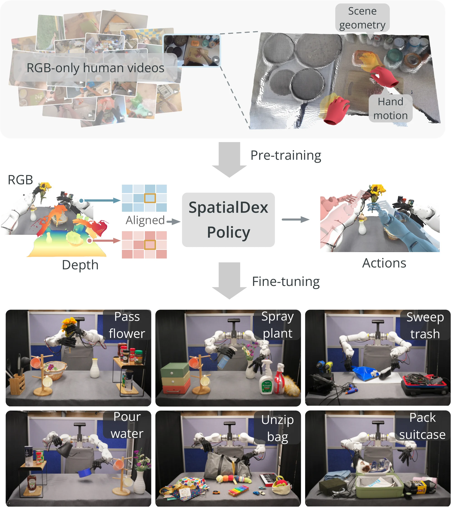
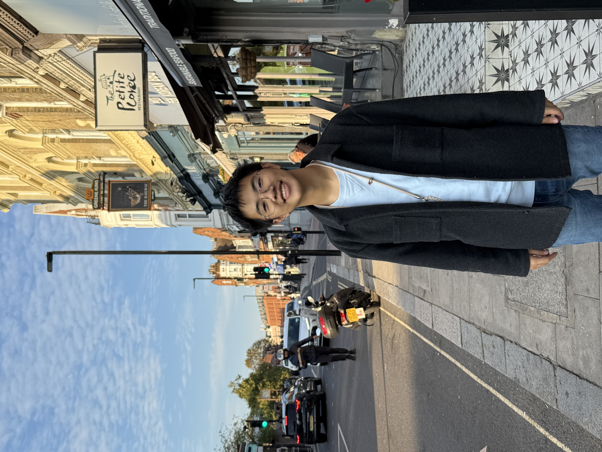
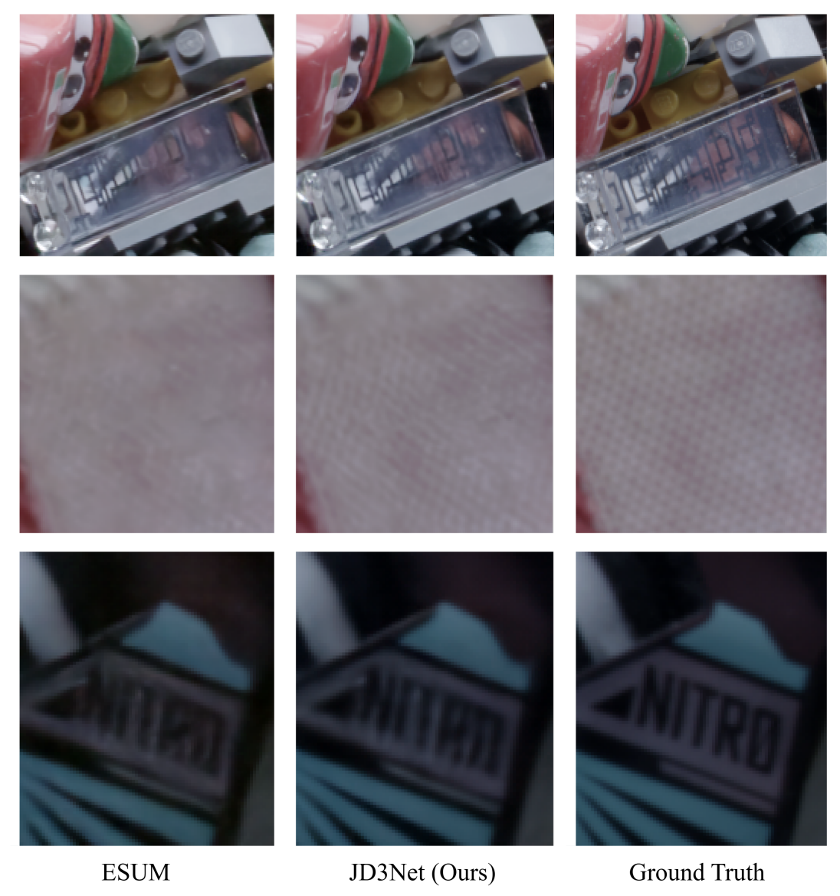

Email: coryf615@gmail.com
I am an undergraduate studying Computer Science at Cornell University. I am fortunate enough to work on robotics with Professor Kuan Fang.
I am interested in reliable and generalizable robot manipulation, in particular how diverse techniques (such as in vision, agentic methods, or controls) can interact to improve robotic capabilities.

